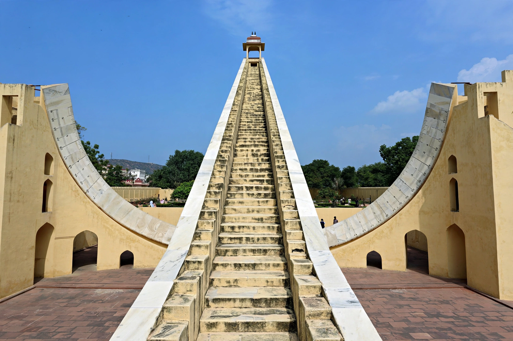

| Samrat Yantra | |
|---|---|
 The Samrat Yantra at Jaipur, the world's largest stone sundial | |
| Location | Jantar Mantar, Jaipur, India |
| Built | c. 1734 |
| Commissioned by | Maharaja Jai Singh II |
| Height | 27 m (89 ft) |
The Samrat Yantra ("Supreme Instrument") is a giant equinoctial sundial at the Jantar Mantar observatory in Jaipur, Rajasthan, India. Built around 1734 by Maharaja Jai Singh II, it is the largest stone sundial in the world, standing 27 metres (89 ft) high, and forms the centrepiece of a UNESCO World Heritage Site.
The instrument consists of a huge triangular gnomon whose hypotenuse is inclined at an angle equal to the latitude of Jaipur (about 27°) and thus parallel to the Earth's axis. On either side of the gnomon are quadrants — great graduated arcs lying in the plane of the equator — onto which the shadow of the gnomon's edge falls. Because of the instrument's enormous scale, the shadow moves at roughly one millimetre per second and can be seen creeping across the scale with the naked eye.
The scale is graduated to give local time with a nominal precision of about two seconds, though in practice atmospheric and observational limits make readings somewhat less exact. The Samrat Yantra could also be used to measure the declination of the Sun and other celestial objects. Smaller versions of the instrument stand at Jai Singh's other observatories in Delhi, Ujjain, Varanasi and Mathura.